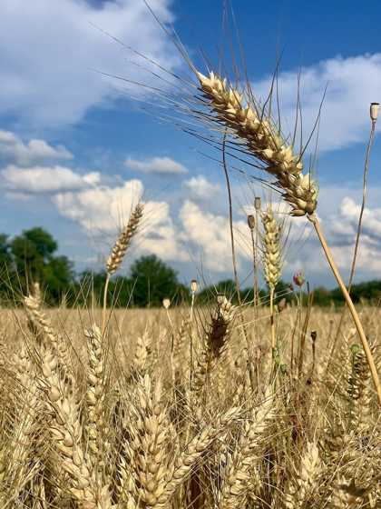
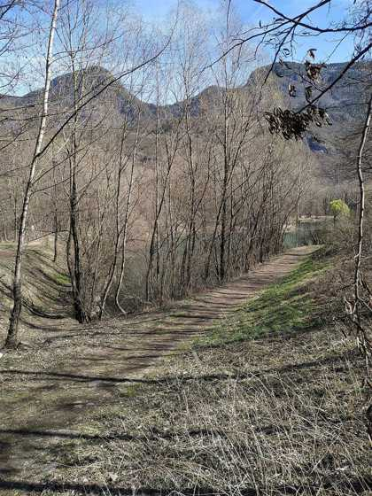
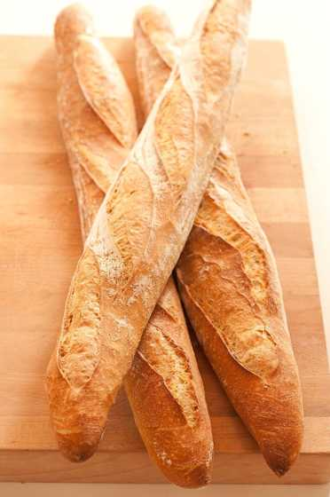
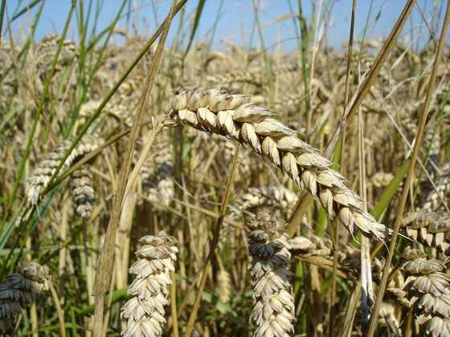

京都府長岡京市長岡
パン+焼き菓子のお店 harru
山へ出かけたくなる、ちいさな山小屋のようなパン屋さん。ハイキングのお供に、春のあたたかさを包んで。
お店の想い
よりみちしたくなる、山小屋のお店
紹介記事によると、harruは2018年3月30日に開店した、パンと焼き菓子のお店です。店主は登山が好きで、「美味しいパンや焼き菓子を持って、思わず山に出かけたくなるような店」を目指しているそうです。ハイキングのお供に持っていきたいパンをコンセプトにしています。
店名には、春を感じるあたたかい気持ちを届けたい、「よりみち」したくなる店でありたい、ここからどこかへ羽ばたきたいと思ってほしい、という思いが込められているとされています。店の小窓は、山形にあった店主の祖母宅の障子窓を移したものだと紹介されています。
情報源:京都ぴ(2022年の紹介記事) / 長岡京市の紹介ページ / Instagram


パン・焼き菓子
かみしめるほど、小麦の味
紹介記事では、ハード系のパンが中心で、北海道産小麦などの国産小麦を使い、子どもにも安心して食べてもらえる材料を吟味していると紹介されています。ほうじ茶あんぱん、焼き菓子などが挙げられていました(取扱いは時期により異なる場合があります)。




- 価格
- 準備中
- メニュー詳細
- 準備中(最新はInstagramをご覧ください)


口コミ
こんな声が聞こえてきそう
以下は制作側が作成した「イメージ例」であり、実在のお客様の声ではありません。
イメージ例ハード系のパンが好きなので、噛むほど小麦の香りが広がるのがうれしいです。
30代・パン好き
イメージ例散歩の途中に立ち寄れる距離感がいいなと思いました。焼き菓子はお土産にもよさそうです。
40代・近所にお住まい
イメージ例小さな窓のある外観が山小屋みたいで、入る前から楽しい気分になりました。
20代・お散歩中
アクセス
お店の情報
- 住所
- 〒617-0823 京都府長岡京市長岡2丁目15-14
- 電話
- 準備中
- 営業時間
- 準備中
- 定休日
- 準備中
- @panya_harru
営業日や時間は変わることがあるため、最新情報はInstagramでご確認ください。
写真クレジット
写真は縮小・切り抜きの加工をしています。ライセンスの詳細は creativecommons.org をご覧ください。
- img01 小麦の穂と青空(イタリア):Daniela M. / CC BY-SA 4.0 / 出典(Wikimedia Commons)
- img02 クロワッサン(撮影地不明):Herry Wibisono (herryway) / CC0 1.0 / 出典(Wikimedia Commons)
- img03 麦畑の穂の近接(撮影地不明):User:Bluemoose / CC BY-SA 3.0 / 出典(Wikimedia Commons)
- img04 冷却網の上の丸いパン(米国):Dana Hutchinson / CC BY 3.0 / 出典(Wikimedia Commons)
- img05 木の板の上の細長いパン(撮影地不明):jules / stonesoup / CC BY 2.0 / 出典(Wikimedia Commons)
- img06 パンの断面(撮影地不明):Jim Champion / CC BY-SA 2.0 / 出典(Wikimedia Commons)
- img07 小麦粉の山(撮影地不明):Mudd1 / CC BY-SA 3.0 / 出典(Wikimedia Commons)
- img08 穂のシルエットと淡い空(撮影地不明):Jez Timms / CC0 1.0 / 出典(Wikimedia Commons)
- img09 夕暮れの穂(インド):Cezanne Ali / CC0 1.0 / 出典(Wikimedia Commons)
- img10 夕景の麦畑(撮影地不明):Nupur Dasgupta / CC BY 2.0 / 出典(Wikimedia Commons)
- img11 熟した小麦の穂(英国):Jazzmaster1997 / CC BY 4.0 / 出典(Wikimedia Commons)
- img12 麦畑の間の小道(撮影地不明):Nupur Dasgupta / CC BY 2.0 / 出典(Wikimedia Commons)
- img14 木立の小道(イタリア):Giovanni Ussi / CC BY-SA 4.0 / 出典(Wikimedia Commons)